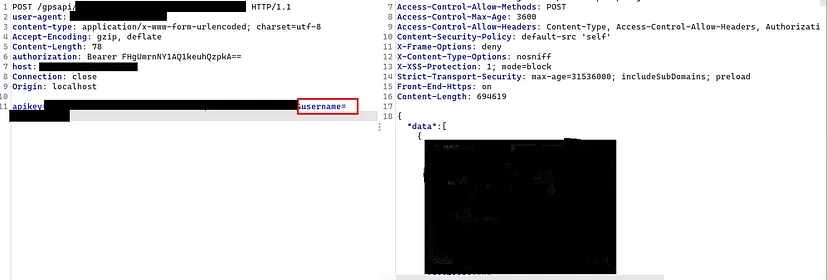

API Security Misconfiguration Leads to tons of PII data Leakage.
What is API Misconfiguration?
API7:2019 Security Misconfiguration
Security misconfiguration is commonly a result of insecure default configurations, incomplete or ad-hoc configurations, open cloud storage, misconfigured HTTP headers, unnecessary HTTP methods, permissive Cross-Origin resource sharing (CORS), and verbose error messages containing sensitive information.
Target Information
The target application is similar to uber, ola, and any other transport tracking application. The passengers can track their respective vehicles' GPS locations to get the route information like ola, uber, and other taxi services.
Recon
I downloaded and installed the application in the emulator and performed static analysis and reverse engineering using MOBSF, APKtool, jadx -> No luck. The Application having two types of users are users=passengers, administrators.
Playing with proxy
Started the proxy program (Burp Suite) and clicking all the buttons to find other vulnerabilities in the API. After playing with the proxy I got knowledge about the API that the application is using to access information.
API Misconfiguration in the target
The Application is using a REST API. The API generates an API key and authorization token at the time of user login actions. I logged in and logged out from the application to observe how the API authorization token works. It seems the API key is default and it will not change and the authorization token changes sometimes and sometimes not. I figured out that the application needs three things to access all the information including administrator access.
Things that API requires
- API Key
- Authorization Token
API Key
We can get the API key at the time of log in the API key never changes from its default value
Auth Token
The API does not properly validate the auth token what it validates is that the token is legit or not like in the format the developer created, so all we need is an API-generated token which we can get at the time of login it does not matter whether your credentials are right or wrong.
Administrator Username
- Username Enumeration
- Response Manipulation -> change to admin Privileges
Response Manipulation
Here comes the fun part I created two accounts and tried to take over those accounts using the response manipulation technique. I observe the server responses when I log in as user=passenger and noticed that the JSON body having an object named role and the value is base64 encoded.
I quickly changed the role value from user to admin in base64 encoded format and boom I logged in as administrator. There are so many different endpoints present for the administrator account.
PII Data Leak
As I stated above to access all those endpoints we need an API key, Auth token, and Administrator username.

Now we have all the three things that the API requires by using all those I accessed all the user=passengers PII data and vehicle information in plain Text in JSON body.
Taking Over other Administrator Accounts
Since the API is misconfigured we can use the above-shown endpoint to enumerate the administrator usernames.

The endpoint only provides those outputs if the logged-in user is an administrator, the other normal users can’t access that information. So I prepared a bunch of username wordlists and brute-forced them and found more than 4 valid administrator usernames.
Then I started sending the requests with that valid username and found different PII data for each of them it seems the separate administrators have different data.
After some time I discovered that the API is very poorly configured which means you don’t have to be logged in to the application to access the administrator information. All we have to do to collect and craft a request with API Key, Auth token which we can get at the time of login, and valid username with all of these I can access all of the administrator information.
Take-Aways:-
- Check for API documentation and collect the authentication and authorization inputs that are required to access data from the API endpoints.
- Check for API misconfigurations like does the Auth token, API key, and other auth mechanisms are validated properly.
- Check for Response manipulation attacks.
- Check for Rate Limiting vulnerability to enumerate Usernames.
Thank you for reading.
Follow me on Twitter : thevillagehacker